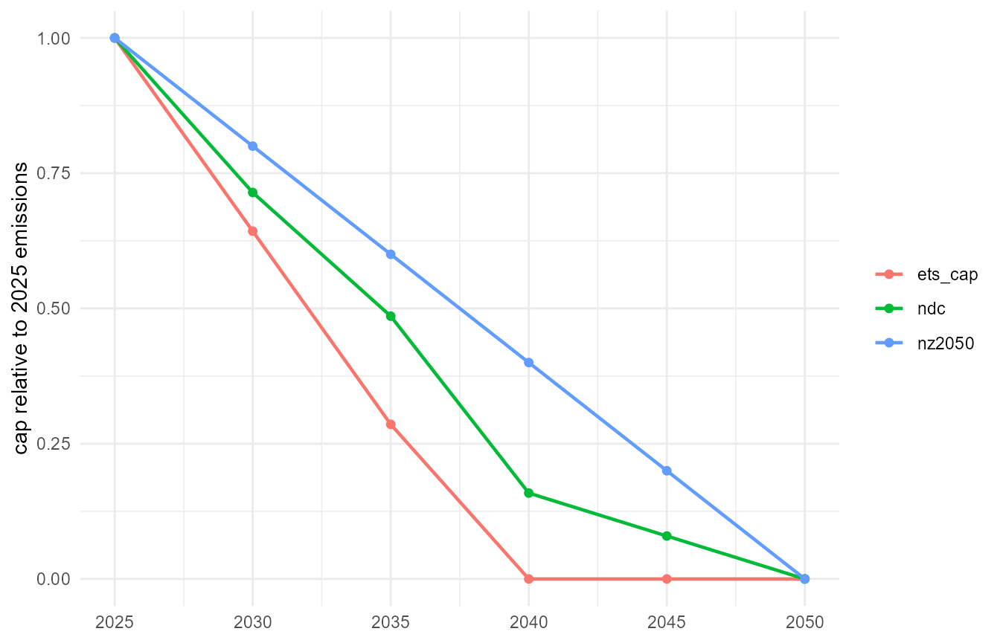

Policy enters a converted model through two native energyRt levers: a
constraint on the emission accounting variable (a
carbon cap) and a tax on the CO2 commodity
(a carbon price). Both are plain objects added to a model before
interpolation — no converter machinery involved. The fuels of every
shipped model already carry their emission factors (0.198
tCO2/MWhth for gas, 0.336 for coal, 0.407 for
lignite, …), so vEmsFuelTot accounts emissions per region
and year out of the box.
For scale: the uncapped pypsa_eur_41 full-year
solve at 2050 costs emits about 860 Mt CO2 —
with nothing pricing carbon, the inherited coal fleet runs baseload. The
levers below are what change that.
A carbon cap: zero emissions by 2050
A cap is a constraint on the sum of
vEmsFuelTot — dimensions not listed in
for.each (here: region) are summed, so this caps the
total system:
CO2_ZERO <- newConstraint(
name = "CO2_ZERO", eq = "<=",
for.each = data.frame(year = 2050, comm = "CO2"),
term1 = list(variable = "vEmsFuelTot"),
rhs = 0, defVal = Inf)Added to the overnight model with
add(pypsa_eur_41, CO2_ZERO), the 2050 solve must displace
all 860 Mt.
A carbon tax
newTax() prices a commodity’s balance; with costs in EUR
and emissions in tonnes, bal is EUR/tCO2. A
rising illustrative path:
CT_CO2 <- newTax(
name = "CT_CO2", comm = "CO2",
tax = data.frame(year = c(2025, 2050), bal = c(80, 250)))Values between the anchor years interpolate linearly. A tax leaves the emission level to the solver — the cap and the tax are the two ends of the same lever, and both can be present.
Data-backed scenarios: policy_paths
The policy_paths dataset carries three sourced cap
trajectories as factors relative to 2025 emissions:
-
ets_cap— the EU ETS cap shape: linear reduction at the Fit-for-55 rates (Directive (EU) 2023/959, 4.3 %/yr to 2027 and 4.4 %/yr after), which takes the ETS-1 cap to zero around 2039; power is ETS-covered, so the power cap follows it. Counterintuitively this makes the legislated path the tightest of the three — the linear reduction factors exhaust the cap a decade before the net-zero-2050 line. Two caveats keep it a shape rather than a hard ceiling: allowances bank across years (the annual cap is not an annual emissions limit), and the ETS-1 cap covers industry and aviation alongside power. -
ndc— the EU’s economy-wide pledges mapped to 2025-relative factors: −55 % by 2030 vs 1990 (Climate Law), the 66.25–72.5 % indicative 2035 range of the NDC submitted to the UNFCCC in November 2025 (midpoint used), −90 % by 2040, neutrality by 2050. The mapping uses the EEA estimate of about −37 % vs 1990 reached by 2025, and is conservative for power, which decarbonises faster than the economy- wide average. -
nz2050— a plain linear path from 2025 to zero at 2050.
library(ggplot2)
ggplot(policy_paths, aes(year, factor, colour = scenario)) +
geom_line(linewidth = 0.8) + geom_point(size = 1.6) +
labs(x = NULL, y = "cap relative to 2025 emissions", colour = NULL) +
theme_minimal()
The three cap trajectories, as factors on 2025 emissions.
A factor path becomes a cap by choosing the base — the natural choice is the model’s own solved 2025 emissions, read from a first-milestone dispatch:
E2025 <- 8.6e8 # tCO2; replace with your solved 2025 emissions:
# sum(getData(scen, "vEmsFuelTot", year = 2025)$value)
ndc <- subset(policy_paths, scenario == "ndc")
CO2_NDC <- newConstraint(
name = "CO2_NDC", eq = "<=",
for.each = data.frame(year = ndc$year, comm = "CO2"),
term1 = list(variable = "vEmsFuelTot"),
rhs = data.frame(year = ndc$year, rhs = ndc$factor * E2025),
defVal = Inf)On the multi-year models (pypsa_eur_41v, the integrated
pypsa_eur_41i) the cap binds at every milestone; between
anchor rows the right-hand side interpolates linearly.
Solving a scenario
m <- add(pypsa_eur_41i, CO2_NDC)
scen <- interpolate_model(
m, name = "ndc",
calendar = calendars$d365_h24_1dpm)
scen <- solve_scenario(scen, solver = solver_options$julia_highs)The comparison of the solved policy scenarios — capacity, dispatch, retirement and cost against the unconstrained baseline — belongs to the results pages as solves accumulate.
Sources
- Directive (EU) 2023/959 — the revised EU ETS (linear reduction factors, rebasing).
- EU ETS emissions cap — European Commission.
- Understanding the EU ETS — Clean Energy Wire factsheet; under the current linear reduction factors the ETS-1 cap reaches zero by 2039.
- The EU’s updated NDC, November 2025 — Council of the EU.
- The 2040 climate target — European Commission.